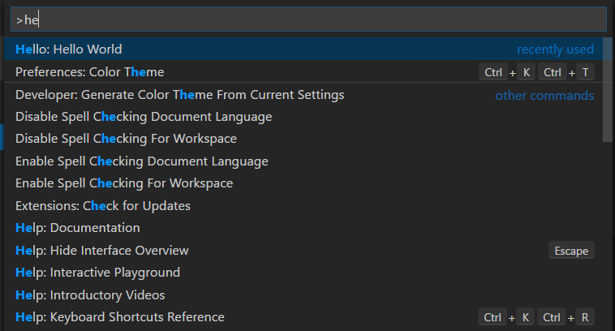

Contribution Points - package.json
This document covers the various contribution points that are defined in the package.json extension manifest.
configurationcommandsmenuskeybindingslanguagesdebuggersbreakpointsgrammarsthemessnippetsjsonValidation
contributes.configuration
Contribute configuration keys that will be exposed to the user. The user will be able to set these configuration options either from User Settings or from the Workspace Settings.
When contributing configuration keys, a JSON schema describing these keys is actually contributed. This ensures the user gets great tooling support when authoring VS Code settings files.
You can read these values from your extension using vscode.workspace.getConfiguration('myExtension').
Example
|

contributes.commands
Contribute an entry consisting of a title and a command to invoke to the Command Palette (⇧⌘P (Windows, Linux Ctrl+Shift+P)).
Note: When a command is invoked (from a key binding or from the Command Palette), VS Code will emit an activationEvent
onCommand:${command}.
Example
|

contributes.menus
Contribute a menu item for a command to the editor or Explorer. The menu item definition contains the command that should be invoked when selected and the condition under which the item should show. The latter is defined with the when clause which uses the key bindings when clause contexts. In addition to the mandatory command property, an alternative command can be defined using the alt-property. It will be shown and invoked when pressing Alt while hovering over a menu item. Last, a group-property defines sorting and grouping of menu items. The navigation group is special as it will always be sorted to the top/beginning of a menu.
Currently extension writers can to contribute to:
- The Explorer context menu -
explorer/context - The editor context menu -
editor/context - The editor title menu -
editor/title - The editor title context menu -
editor/title/context - The debug callstack view context menu - ‘debug/callstack/context’
Note: When a command is invoked from a (context) menu, VS Code tries to infer the currently selected resource and passes that as a parameter when invoking the command. For instance, a menu item inside the Explorer is passed the URI of the selected resource and a menu item inside an editor is passed the URI of the document.
In addition to a title, commands can also define icons which VS Code will show in the editor menu bar.
Example
|

Sorting of groups
Menu items can be sorted into groups. They are sorted in lexicographical order with the following defaults/rules.
The context menu of the editor has these default:
navigation- Thenavigationgroup comes first in all cases.1_modification- This group comes next and contains commands that modify your code.9_cutcopypaste- The last default group with the basic editing commands.
You can add menu items to these groups or add new groups of menu items in between, below, or above. Only the editor context menu allows this grouping control.
Sorting inside groups
The order inside a group depends the title or an order-attribute. The group-local order of a menu item is specified by appending @<number> to the group identifier as shown below:
|
contributes.keybindings
Contribute a key binding rule defining what command should be invoked when the user presses a key combination. See the Key Bindings topic where key bindings are explained in detail.
Contributing a key binding will cause the Default Keyboard Shortcuts to display your rule, and every UI representation of the command will now show the key binding you have added. And, of course, when the user presses the key combination the command will be invoked.
Note: Because VS Code runs on Windows, Mac and Linux, where modifiers differ, you can use “key” to set the default key combination and overwrite it with a specific platform.
Note: When a command is invoked (from a key binding or from the Command Palette), VS Code will emit an activationEvent
onCommand:${command}.
Example
Defining that Ctrl+F1 under Windows and Linux and Cmd+F1 under Mac trigger the "extension.sayHello" command:
|

contributes.languages
Contribute the definition of a language. This will introduce a new language or enrich the knowledge VS Code has about a language.
In this context, a language is basically a string identifier that is associated to a file (See TextDocument.getLanguageId()).
VS Code uses three hints to determine the language a file will be associated with. Each “hint” can be enriched independently:
- the extension of the filename (
extensionsbelow) - the filename (
filenamesbelow) - the first line inside the file (
firstLinebelow)
When a file is opened by the user, these three rules are applied and a language is determined. VS Code will then emit an activationEvent onLanguage:${language} (e.g. onLanguage:python for the example below)
The aliases property contains human readable names under which the language is known. The first item in this list will be picked as the language label (as rendered in the status bar on the right).
The configuration property specifies a path to the language configuration file. The path is relative to the extension folder, and is typically ./language-configuration.json. The file uses the JSON format and can contain the following properties:
comments- Defines the comment symbolsblockComment- The begin and end token used to mark a block comment. Used by the ‘Toggle Block Comment’ command.lineComment- The begin token used to mark a line comment. Used by the ‘Add Line Comment’ command.
brackets- Defines the bracket symbols that influence the indentation of code between the brackets. Used by the editor to determine or correct the new indentation level when entering a new line.autoClosingPairs- Defines the open and close symbols for the auto-close functionality. When an open symbol is entered, the editor will insert the close symbol automatically. Auto closing pairs optionally take anotInparameter to deactivate a pair inside strings or comments.surroundingPairs- Defines the open and close pairs used to surround a selected string.
If your language configuration file name is or ends with language-configuration.json, you will get validation and editing support in VS Code.
Example
|
language-configuration.json
|
contributes.debuggers
Contribute a debugger to VS Code. A debugger contribution has the following properties:
typeis a unique ID that is used to identify this debugger in a launch configuration,labelis the user visible name of this debugger in the UI,programthe path to the debug adapter that implements the VS Code debug protocol against the real debugger or runtime,runtimeif the path to the debug adapter is not an executable but needs a runtime,configurationAttributesis the schema for launch configuration arguments specific to this debugger,initialConfigurationslists launch configurations that are used to populate an initial launch.json,configurationSnippetslists launch configurations that are available through IntelliSense when editing a launch.json,variablesintroduces substitution variables and binds them to commands implemented by the debugger extension.
Example
|
For a full walkthrough on how to integrate a debugger go to Debuggers.
contributes.breakpoints
Usually a debugger extension will also have a contributes.breakpoints entry where the extension lists the language file types for which setting breakpoints will be enabled.
|
contributes.grammars
Contribute a TextMate grammar to a language. You must provide the language this grammar applies to, the TextMate scopeName for the grammar and the file path.
Note: The file containing the grammar can be in JSON (filenames ending in .json) or in XML plist format (all other files).
Example
|
See Adding Language Colorization for instructions on using the yo code extension generator to quickly package TextMate .tmLanguage files as VS Code extensions.

contributes.themes
Contribute a TextMate theme to VS Code. You must specify a label, whether the theme is a dark theme or a light theme (such that the rest of VS Code changes to match your theme) and the path to the file (XML plist format).
Example
|

See Changing the Color Theme for instructions on using the yo code extension generator to quickly package TextMate .tmTheme files as VS Code extensions.
contributes.snippets
|
contributes.jsonValidation
Contributes a validation schema for a specific type of json file. The url value can be either a local path to a schema file included in the extension or a remote server URL such as a json schema store.
|
Next Steps
To learn more about VS Code extensibility model, try these topic:
- Extension Manifest File - VS Code package.json extension manifest file reference
- Activation Events - VS Code activation events reference